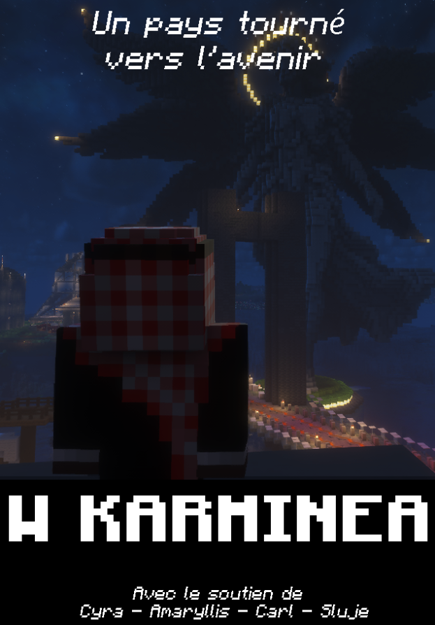

Karminéa a fait son choix
Après une campagne intense, des débats tendus et une élection disputée jusqu'au bout — Karminéa a tranché. Voici les résultats officiels de la présidentielle.

Karminéa — Un pays tourné vers l'avenir. Avec le soutien de Cyra, Amaryllis, Carl & Sluje.
Karminéa a voté. Au terme d'une campagne qui aura tenu les habitants en haleine jusqu'à la dernière voix, les résultats de la présidentielle sont tombés. Deux candidatures, deux visions, un seul vainqueur. Le Parlement publie ici les chiffres officiels et définitifs.
📊 Les résultats
& Mr Lamoustache
La passation des pouvoirs a eu lieu avec Mr Jackson, président sortant, marquant officiellement le changement de présidence. La prise de fonction de Mr Januk sera effective depuis le 21 juin.
🙏 Remerciements
Le Parlement tient à remercier chaleureusement l'ensemble des citoyens de Karminéa pour leur participation, leurs votes et leur implication tout au long de cette élection. La démocratie karminéenne est vivante — et c'est grâce à vous.
Un remerciement sincère également à Mr Kim Cannard et Mr Lamoustache pour leur campagne, leur engagement et la qualité des débats qu'ils ont portés. Karminéa est plus forte pour avoir eu des candidats de cette trempe.
Félicitations à Mr Januk. — Le Parlement